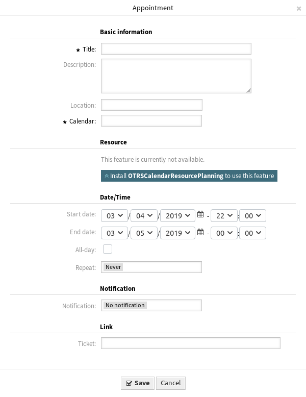

新建预约¶
使用此菜单项可将新预约添加到日历。 还可以通过点击 日历概览 或 日程概览 屏幕中的 添加预约 按钮来添加新的预约。 还可以拖动日历小部件的范围以设置粗略的时间跨度。 在此之后，会出现一个模态对话框，可以插入数据。

预约对话框
预约设置¶
添加或编辑此资源时，可以使用以下设置。 标有星号的字段是必填字段。
- 标题 *
- 此资源的名称。 可以在此字段中输入任何类型的字符，包括大写字母和空格。 名称将显示在概览表中。
- 描述
- 向此资源添加附加信息。 为了更加清晰，建议始终将此字段填充为带有完整句子的资源描述。
- 位置
如果该位置包含值，则在该字段旁边将显示相关链接图标，该字段默认链接到 Google 地图以获得更好的位置图片。
参见
该链接可通过系统配置选项
AgentAppointmentEdit::Location::Link进行配置。- 日历 *
- 选择要将预约添加到的日历。
- 资源
- 资源规划 不是OTRS框架的一部分。 请通过sales@otrs.com与我们联系进行升级。
- 开始日期
- 预约的开始日期。
- 结束日期
- 预约的结束日期。
- 全天
- 此复选框表示预约发生在一整天。 如果选中，则开始日期和结束日期的时间将被禁用并设置为 00:00。
- 重复
- 定义重复预约并将单独描述，请参阅下面的 重复预约。
- 通知
定义预约通知应在预约开始之前发送的时间段。
参见
可以在系统管理界面中设置预约通知。 请联系您的管理员。
- 工单
可以使用此搜索字段将工单和其他对象链接到预约。
注解
也可以使用通配符（*）。 输入两个星号（**）以列出所有工单。
重复预约¶
如果需要以反复方式创建预约，则可以设置关于预约发生的详细信息。
若要创建重复预约：
- 选择 开始日期 和 结束日期 （或选中 全天）。
- 从预先定义的发生频率中进行选择，或选择 自定义 设置。
- 选择要重复的日期或重复的次数。

重复预约
做出所有决定并成功保存设置后，预约将被标记为定期预约。 父预约将使用圆圈箭头符号标记，子预约将使用链符号标记。

重复预约概览
以后对父预约的更改将自动影响子预约，而不会有任何进一步的消息。 如果服务人员即将更改其中一个子预约，则会显示一条消息，确认他们想要更新的内容。

编辑重复预约
如果要更新 所有预约 ，则行为将与更新父预约的行为相同。 所有选项（包括重复设置）都是可更改的。
如果 仅更新此预约 ，则无法更改重复设置，但会提供相关消息和指向父预约的链接。
启用的重复选项将另外显示在相关预约的工具提示中。